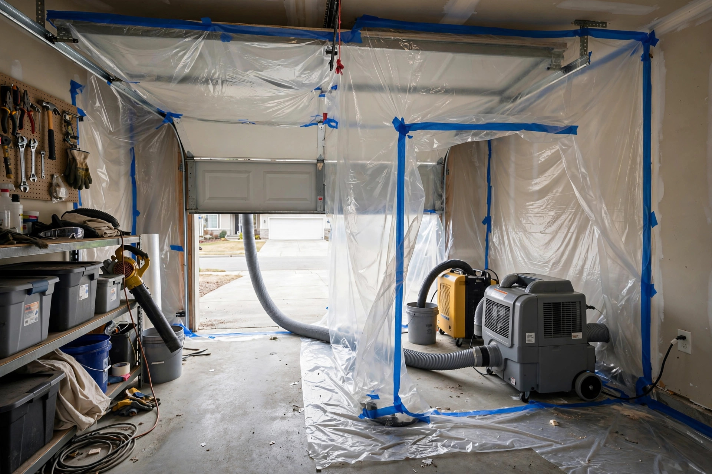

Mold Remediation in Kuna, ID
Kuna's mix of new subdivisions and converted farmland creates mold jobs with a local fingerprint: irrigation-driven crawlspace growth, bath fans venting into attics, and tight new builds trapping construction moisture. Remediation here means fixing the Kuna-specific source, not just wiping the spot.
What a job looks like
Typical scenario (illustrative example — not a past job)
A homeowner in Falcon Crest finds a musty smell in the garage after the first heavy irrigation-season rain. The inspection traces it to a crawlspace where the vapor barrier was never sealed at the seams, letting damp soil air load the joists. Containment goes up at the crawlspace hatch, the barrier gets replaced and sealed, and the joists are HEPA-cleaned — with the grading outside corrected so runoff stops feeding it.
Remediation in the right order
Following the IICRC S520 approach and EPA remediation guidance.
Map it before touching it
Moisture readings and a thermal scan define the true extent. In Kuna's new builds, the visible patch is often half the story — the wall cavity tells the rest.
Stop the water
Regrade a swale, extend a downspout past the hardpan splash zone, reroute a bath fan through the roof. No remediation holds without this.
Seal the zone
Poly sheeting, zippered entry, and a HEPA-filtered negative air machine. Spores leave through the machine's exhaust, not through your hallway.
Remove and HEPA-clean
Growth-bearing drywall and insulation are bagged out. Framing is vacuumed with HEPA filtration, then cleaned. Nothing porous gets a second chance.
Dry, then prove it
Dehumidification brings materials to documented dry readings. Independent clearance testing is recommended before any rebuild.
Where Kuna remediation jobs begin
Crawlspace humidity spikes
April through October, water flows through the canals and laterals around Kuna. Former farmland parcels see groundwater rise, and crawlspaces without sealed vapor barriers absorb it straight into the joists.
Enclosed damp lumber
Framing that sat through a wet spring got walled in before drying. Months later, the homeowner smells something in a bedroom and finds the wall cavity never dried.
Water against the foundation
Caliche barely absorbs. Roof and sprinkler water sheets across it and pools at the foundation, wicking into basement walls and feeding growth at the slab line.
Keeping it from returning
Keep indoor humidity between 30 and 50%The EPA's recommended range. A basic hygrometer in the living area tells you where you stand.
Grade soil away from the foundationSix inches of fall over ten feet keeps hardpan runoff moving past the house instead of into it.
Verify bath fans exit the buildingPop your head into the attic once. If a flex duct ends in insulation, that is a future remediation job.
Fix drips within a day or twoThe CDC notes mold can start growing on damp materials within 24 to 48 hours.
Remediation questions
How long does mold remediation take in a Kuna home?
A single contained room usually takes two to three days: one for containment and removal, one for HEPA cleaning and drying, and a final check. Whole-crawlspace or multi-room jobs run longer. Drying to verified moisture levels sets the pace, not the calendar.
Do I need to leave during remediation?
Usually not. Sealed containment with negative air pressure keeps the work zone isolated from living areas. Households with infants, elderly residents, or severe asthma sometimes choose to stay elsewhere during active removal days.
Will you cut out my drywall?
Only what cannot be cleaned. The EPA guidance is clear: porous materials like drywall and insulation with growth get removed; solid framing gets HEPA-vacuumed and cleaned. We cut to a clean margin, never more.
What causes mold to return after remediation?
Unfixed moisture. If the irrigation runoff grading, bath-fan venting, or plumbing seep that fed the growth is still there, regrowth is a matter of time. Every job here includes a moisture-source fix plan.
Do you guarantee the mold is gone?
We verify with moisture readings and a visual clearance check, and we recommend independent post-remediation testing for larger jobs. What we guarantee is the process: containment, removal, HEPA cleaning, and documented dry readings.
Find the full extent first
A walk-through with moisture mapping costs nothing and tells you whether this is a contained fix or a bigger job.
Open 24 hours · Kuna and the Treasure Valley